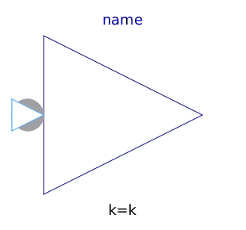
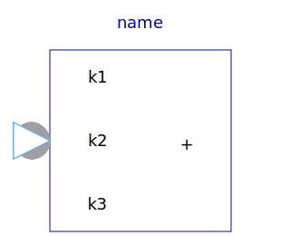
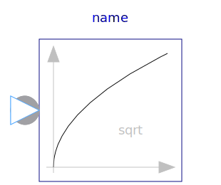
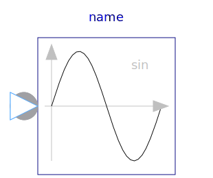
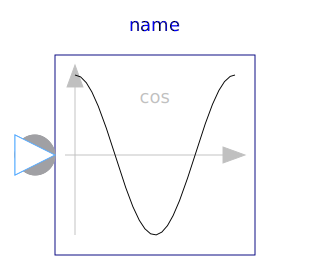
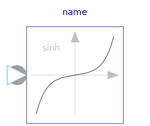
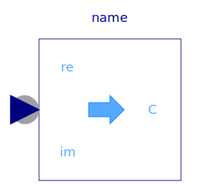
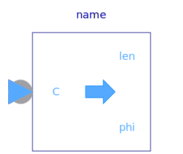

This package contains basic mathematical operations, such as summation and multiplication, and basic mathematical functions, such as sqrt and sin, as input/output blocks. All blocks of this library can be either connected with continuous blocks or with sampled-data blocks.
| Name | Description |
|---|---|
|  Gain | Output the product of a gain value with the input signal |
| Output the sum of the elements of the input vector | |
| Output difference between commanded and feedback input | |
| Output the sum of the two inputs | |
|  Add3 | Output the sum of the three inputs |
| Output product of the two inputs | |
| Output first input divided by second input | |
|  Sqrt | Output the square root of the input (input >= 0 required) |
|  Sin | Output the sine of the input |
|  Cos | Output the cosine of the input |
| Tan | Output the tangent of the input |
| Output the arc sine of the input | |
| Output the arc cosine of the input | |
| Output the arc tangent of the input | |
|  Sinh | Output the hyperbolic sine of the input |
| Output the hyperbolic cosine of the input | |
| Output the hyperbolic tangent of the input | |
| Output the exponential (base e) of the input | |
| Output the natural (base e) logarithm of the input (input > 0 required) | |
|  RealToComplex | Converts Cartesian representation to complex |
| Converts polar representation to complex | |
| Converts complex to Cartesian representation | |
|  ComplexToPolar | Converts complex to polar representation |